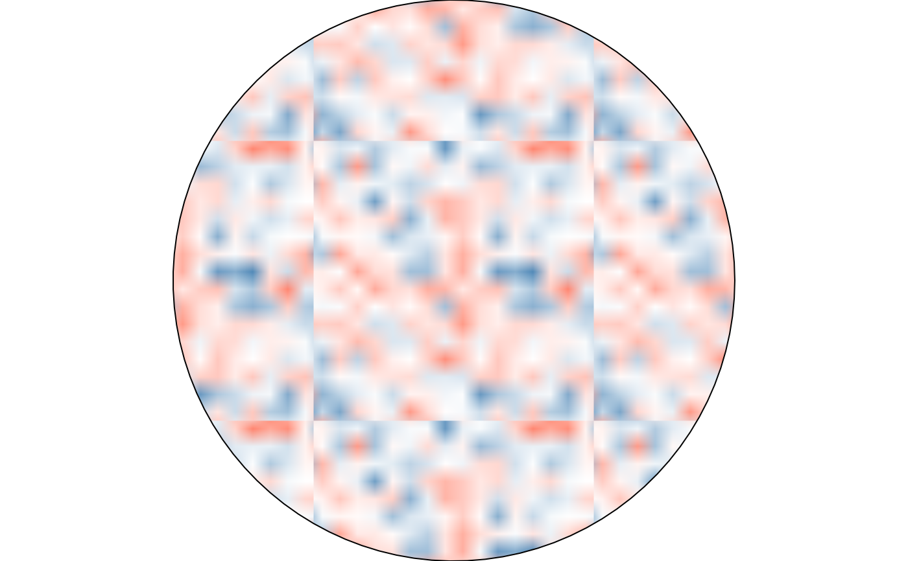

fill_flow() is a swirlier variant of fill_noise(): before sampling
the final noise field, the tile's own (theta_u, theta_v) angles (see
fill_noise() details for why angles, not raw (u, v)) are displaced
by a second, independent torus-periodic noise field – the "fBm of fBm"
domain-warping recipe popularized for flowing, curl-noise-like
textures, adapted here so the warp field is itself torus-periodic
rather than sampled directly, keeping the whole result seamless.
Usage
fill_flow(
color = "black",
spacing = 0.5,
aspect = NULL,
resolution = 32L,
alpha = 1,
warp = 2,
warp_frequency = 1,
warp_octaves = 1L,
frequency = 1,
octaves = 2L,
seed = 1L,
extend = "repeat"
)Arguments
- color
One or more fill colours. A single colour (the default) fades in opacity from fully transparent to
alpha, exactly as before this argument accepted a vector. Two or more colours instead blend across agrDevices::colorRamp()built from them, driven by the noise value, withalphaapplied as a flat opacity across the whole fill (see the internalnoise_to_pixels()helper). Default"black".- spacing
Baseline tile size, as a fraction of the target's bounding box. Must be a positive number. Default
0.5.- aspect
Width-to-height ratio of the target polygon's bounding box. Must be a positive number, or
NULL(the default) to resolve it automatically from the real target's own bounding-box aspect ratio atdraw()time – see the fill class. Passing a fixed number instead computes the pattern once, immediately, against that value only.- resolution
Raster resolution (pixels per tile edge). Must be a positive integer of at least
2L. Default32L.- alpha
Opacity. For a single
color, the maximum opacity at the noise field's peak; for two or more, a flat opacity applied uniformly. Must be a number in(0, 1]. Default1.- warp
Warp amplitude, in radians of angular displacement. Must be a non-negative number. Default
2.- warp_frequency
Frequency of the two warp-displacement noise fields. Must be non-negative. Default
1.- warp_octaves
Number of octaves for the warp-displacement noise fields. Must be a positive integer. Default
1L.- frequency
Noise frequency, as in
shape_blob(). Must be non-negative. Default1.- octaves
Number of noise octaves, as in
shape_blob(). Must be a positive integer. Default2L.- seed
Integer seed for the noise field, as in
shape_blob(). Default1L.- extend
Passed to
grid::pattern(). Default"repeat".
Value
A pattern object as returned by grid::pattern(), suitable for
use as the fill argument to grid::gpar().
Details
The warp field needs to be decorrelated from the final field and from
itself along each axis, but ambient::gen_simplex()'s 4 input
dimensions are already fully spent on the (theta_u, theta_v) torus
trick, leaving no spare dimension to offset. fill_flow() decorrelates
by seed instead: the u- and v-displacement fields are sampled at
seed + 104729L and seed + 200003L respectively (arbitrary large
primes, chosen only to make collisions with a user's own nearby seed
choices unlikely), before the final field is sampled at seed itself.
Displacing a periodic field's own periodic coordinates by another
periodic field preserves periodicity: shifting u from 0 to 1
still advances theta_u by exactly 2 * pi (a full turn), and the
warp added at each end is identical since it's sampled from a field
that's periodic in u itself – so the warped angle wraps around
exactly as the unwarped one did, with no seam.
As with fill_noise(), a faint tile-boundary rasterization seam can
still be visible on some devices despite the field being exactly
periodic (see its details); larger warp values tend to make this
more noticeable, for the same reason described at fill_marble().
Examples
draw(shape_circle(fill = fill_flow(warp = 3, seed = 9350L)))
# a larger warp gives a swirlier, more curl-noise-like look; warp = 0
# reduces to plain fill_noise()
draw(shape_circle(fill = fill_flow(warp = 0, seed = 9350L)))
draw(shape_circle(fill = fill_flow(warp = 6, seed = 9350L)))
# two or more colours blend across the field, as in fill_noise()
draw(shape_circle(
fill = fill_flow(color = c("steelblue", "white", "tomato"), seed = 9350L)
))
